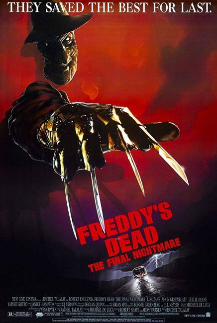

The franchise began with the film A Nightmare on Elm Street (1984) created by Wes Craven. The story focuses on Freddy Krueger (Robert Englund) attacking Nancy Thompson (Heather Langenkamp) and her friends in their dreams, successfully killing all but Nancy, in fictional Springwood, Ohio. Krueger's back-story is revealed by Nancy's mother, Marge, who explains he was a child murderer. The parents of Springwood killed Krueger after he was acquitted on a technicality. Nancy defeats Freddy by pulling him from the dream world and stripping him of his powers when she stops being afraid of him. The films collectively grossed over $457 million at the box-office worldwide.
In 1988 the television series "Freddy's Nightmares" was produced with Freddy as the host. The pilot episode focused on the night Freddy was burned alive by the angry parents of the children he had killed, though the rest of the series featured episodes with independent plots. Twelve novels and multiple comic book series were published featuring Freddy Krueger.
Freddy returns to attack the new family, the Walshes, living in Nancy Thompson's house in 1985's A Nightmare on Elm Street 2: Freddy's Revenge. Freddy possesses the body of Jesse Walsh (Mark Patton), using him to kill. Jesse is temporarily saved by his girlfriend Lisa (Kim Myers), who helps him exorcise Krueger's spirit.
Wes Craven returned to write A Nightmare on Elm Street 3: Dream Warriors, released in 1987. In the second sequel, Freddy is systematically killing the last of the Elm Street children. The few remaining children have been placed in Westin Hills Mental Institution, for allegedly attempting suicide. Nancy Thompson arrives at Westin Hills as a new intern, and realizes the children are being killed by Freddy. With the help of Dr. Neil Gordon (Craig Wasson), Nancy helps Kristen (Patricia Arquette), Joey (Rodney Eastman), Taryn (Jennifer Rubin), Kincaid (Ken Sagoes), and Will (Ira Heiden) find their dream powers, so they can kill Freddy once and for all. Neil, unknowingly until the end, meets the spirit of Freddy's mother, Amanda Krueger (Nan Martin), who instructs him to bury Freddy's remains in hallowed ground in order to stop him for good. Neil completes his task, but not before Freddy kills Nancy.
The story of Kristen Parker would continue with 1988's A Nightmare on Elm Street 4: The Dream Master. This time, Kristen (Tuesday Knight) unwittingly releases Freddy, who immediately kills Kincaid and Joey. Before Freddy can kill Kristen, she transfers her dream powers to Alice (Lisa Wilcox), a friend from school. Alice begins inadvertently providing victims for Freddy when she begins pulling people into her dreams while she sleeps. Alice, who begins taking on traits of the friends who were murdered, confronts Freddy. She uses the power of the Dream Master to release all the souls Freddy has taken; they subsequently rip themselves from Freddy's body, killing him in the process.
Picking up shortly after the events of The Dream Master, A Nightmare on Elm Street 5: The Dream Child involves Freddy using Alice's unborn child, Jacob (Whitby Hertford), to resurrect himself and find new victims. The spirit of Amanda Krueger (Beatrice Boepple) returns, revealing that Freddy was conceived when she, a nun working in a mental asylum, was accidentally locked in a room with "100 maniacs" and raped "hundreds of times". Amanda Krueger convinces Jacob to use the powers he was given by Freddy against him, which gives her the chance to subdue Freddy long enough for Alice and Jacob to escape the dream world.

1991's Freddy's Dead: The Final Nightmare followed the exploits of "John Doe" (Shon Greenblatt), an amnesiac teenager from Springwood, who was sent out to find Freddy's daughter Maggie (Lisa Zane), whom he needs to leave Springwood. Freddy's goal is to create new "Elm Streets", and begin a new killing spree after having killed all of the children in Springwood. Maggie, utilizing new dream techniques, uncovers Krueger's past, which include: being taunted by schoolmates for being the "son of 100 maniacs", being cruel to animals, beaten by his stepfather, the murder of his own wife when she discovers he has been killing children, and the moment when the Dream Demons arrive in his boiler room to make him the offer of eternal life. Eventually, Maggie pulls Freddy out of the dream world, and uses a pipe bomb to blow him up.
Wes Craven returned to the Nightmare series a third time with New Nightmare in 1994. This film focuses on a fictional "reality", where Craven, Langenkamp, and Englund all play themselves, and where the character of Freddy Krueger is really an evil entity that has been trapped in the realm of fiction by all the movies that have been made. Since the movies have stopped, the entity, which likes being Freddy Krueger, is trying to escape into the real world. The only person in its way is Heather Langenkamp, whom the entity sees as "Nancy" – the first person who defeated him. Craven explains to Langenkamp the only way to keep the entity contained is for her to "play Nancy one last time". Langenkamp pursues "Krueger", who has kidnapped her son, into the dream world as "Nancy". There, she and her son trap Krueger in a furnace until he is finally destroyed.
In 2003, New Line pitted Friday the 13th's Jason Voorhees against Freddy Krueger. The film, Freddy vs. Jason, explains that Freddy Krueger has grown weak as people in Springwood, his home, have suppressed their fear of him. Freddy, who is impersonating Pamela Voorhees, the mother of Jason Voorhees, sends Jason (Ken Kirzinger) to Springwood to cause panic and fear. Jason accomplishes this, but refuses to stop killing. A battle ensues in both the dream world and Crystal Lake between the two villains. The winner is left ambiguous, as Jason surfaces from the lake holding Freddy's severed head, which winks and laughs.